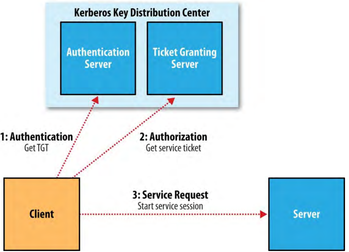

4、Security
早期版本的Hadoop假设HDFS和MapReduce集群由一个安全环境内部的一组合作用户使用。限制访问的措施被设计为防止意外的数据丢失，而不是防止未授权的数据访问。例如，HDFS中的文件访问系统防止一个用户因为一个程序中的漏洞意外地清空整个文件系统，或者失误地输入hadoop fs -rmr /，但是它不防止怀有恶意的用户假借root的身份访问或删除集群中的任何数据。
用安全术语来说，缺少的是一个安全的身份认证（authentication）机制：确保操作Hadoop集群的用户被授权了，因而是可以被信任的。HDFS文件许可只提供授权（authorization），即控制特定用户对特定文件的操作。例如，一个文件只能被某些组的用户读取，不在那些组中的用户没有被授权读取。但是，只有授权是不够的，因为系统仍然可以被获取集群网络访问权限的恶意用户扫荡。
通常限制包含了个人识别信息（例如用户全名的后缀或者IP地址）的数据的访问权限为被授权了访问这些信息的（集群的）组织内的一小部分用户。低敏感性（或者匿名）数据可能被设置为对大部分的用户可以访问。在同一个集群保存不同安全级别的数据集是很方便的（特别是，因为它意味着点券级别的数据可以被共享）。但是，要满足有监管需求的数据保护，对于共享集群安全身份认证必须到位。
Kerberos，一个成熟的开源网络授权协议，给用户授权。但是，Kerberos不管理权限。Kerberos负责识别用户是谁，Hadoop决定用户是否由某个行为的权限。
4.1、Kerberos and Hadoop
在一个高的级别，使用Kerberos时，客户端必须进行三步来访问一个服务，每一步都由和服务器的信息交换：
- 身份认证（Authentication）。客户端向身份认证服务器进行认证并且收到带有时间戳的TGT（认证证书）。
- 授权（Authorization）。客户端使用TGT向TGT服务器请求一个服务证书。
- 服务请求（Service request）。客户端使用服务证书向提供服务的服务器进行认证。使用Hadoop的情况下，服务器可能是namenode或者资源管理器。
身份认证服务器和TGT服务器组成了(KDC)Key Distribution Center。这个过程如图10-2所示：

身份认证和服务请求步骤不是用户级别的行为；客户端代表用户执行这些步骤。身份认证步骤，一般由用户使用kinit命令明确的执行，这一步会需要密码。但是，这并不意味着每次运行job或访问HDFS都要输入密码，TGTs默认持续10个小时（可以被改为长达一周）。通常在操作系统登录时自动身份认证，因而为Hadoop提供了单点登录（single sign-on）。
如果不想被提示输入密码（例如，为了运行无人值守(unattended)的MapReduce job），可以使用ktutil命令创建一个Kerberos keytab文件。一个keytab是一个把存密码并且可能使用-t选项被提供给kinit的文件。
4.1.1、An example
查看一个实际处理的例子。第一步，通过设置core-site.xml文件中的hadoop.security.authentication属性（默认设置为simple，表示的是向后兼容backward-compatible，但是不安全的，使用系统用户名来决定使用的身份）为kerberos来启用Kerberos身份认证。
还需要设置core-site.xml文件中的hadoop.security.authorization为true来启用服务级别授权。可以配置文件hadoop-policy.xml中的ACLs（access control lists）来控制哪些用户和组有连接每个Hadoop服务的权限。服务是在协议级别定义的，所以有MapReduce job提交权限、namenode通信权限，等等。默认，所有的ACLs都是设置为*，这意味着，所有的用户都有访问每个服务的权限；但是，在生产集群应该限制ACLs为应该有访问权限的用户和组。
ACL的格式是，逗号分隔的用户名集合，然后是空格，然后是逗号分隔的组名。例如：
preston,howard directors,inventors
这个ACL将给用户名为person，howard的用户，和组directors，inventors中的用户授权访问权限。
启用了Kerberos身份认证后，当复制一个本地文件到HDFS时会有如下结果：
% hadoop fs -put quangle.txt .
10/07/03 15:44:58 WARN ipc.Client: Exception encountered while connecting to the
server: javax.security.sasl.SaslException: GSS initiate failed [Caused by
GSSException: No valid credentials provided (Mechanism level: Failed to find
any Kerberos tgt)]
Bad connection to FS. command aborted. exception: Call to localhost/
127.0.0.1:8020 failed on local exception: java.io.IOException:
javax.security.sasl.SaslException: GSS initiate failed [Caused by GSSException:
No valid credentials provided
(Mechanism level: Failed to find any Kerberos tgt)]
因为没有Kerberos证书，这个操作失败了。可以使用kinit向KDC进行认证获取一个证书：
% kinit
Password for hadoop-user@LOCALDOMAIN: password
% hadoop fs -put quangle.txt .
% hadoop fs -stat %n quangle.txt
quangle.txt
可以看到文件成功写到了HDFS。注意，即使使用了两种文件系统命令，只用调用kinit一次，因为Kerberos证书10小时有效（使用klist命令查看证书的过期时间，kdestory命令使证书失效）。获取证书后，一切操作如常。
4.2、Delegation Tokens
在如HDFS或者MapReduce这样的分布式系统中，有许多的客户端-服务器交换，每个交互都必须是认证过的。例如，HDFS读操作会设计多次namenode调用并调用一个或多个datanodes。除了使用三步Kerberos证书交换协议来认证每个调用（在繁忙的集群中会给KDC带来很高的负载），Hadoop使用delegation tokens，在不再次连接KDC的情况下认证后续的访问。Delegation tokens（代理令牌）由Hadoop代表用户透明地创建和使用，所以，作为一个用户，除了使用kinit来登录，不用采取其它的行动，但是，有一个它们如何使用的基本理念还是有用的。
delegation token由服务器（这种情况下，是namenode）生成并且可以被当作客户端和服务器之间的一个共享的密码（secret）。在对namenode的第一个RPC调用时，客户端没有delegation token，所以使用Kerberos认证。作为响应的一部分，它从namenode获取一个delegation token。在后续的调用中使用这个delegation token，namenode可以验证它（因为namenode使用一个密钥生成的它），因此客户端获得了服务器的身份认证。
执行HDFS blocks操作时，客户端使用一种特殊的delegation token，叫做block access token，namenode将它作为客户端元数据请求的响应的一部分传递给客户端。客户端使用block access token向datanodes进行身份认证。这可能是因为和datanodes共享了用来生成block access token的密钥（在心跳检测信息中发送），所以datanodes可以验证block access token。因此，只有拥有来自namenode的有效block access token的客户端才能访问HDFS block。这就补上了不安全的Hadoop中只需要block ID就能访问block的安全漏洞。通过设置属性dfs.block.access.token.enable为true来开启这个功能。
在MapReduce中，job 资源和元数据（例如，JAR文件，输入分片，配置文件）存储在HDFS中向application master访问共享，并且用户代码在节点管理器上运行并且访问HDFS上的文件。delegation tokens由job运行过程中访问HDFS的组建使用。当job结束，delegation token会被失效。
delegation tokens会自动地为默认HDFS实例获取，但是如果需要访问其它的HDFS集群，可以通过设置job属性mapreduce.job.hdfs-servers为逗号分隔的HDFS URIs来获取这些集群的delegation tokens。
4.3、Other Security Enhancements
比较值得注意安全增强特征如下：
tasks可以使用提交job的用户的操作系统账户运行，而不是运行节点管理器的用户。这意味着操作系统隔离了运行中的tasks，所以不同用户tasks不能互相发送信号（例如，杀死其它用户的tasks），并且本地信息（例如task数据，通过本地文件系统权限被限定为私有的）也是隔离的。
通过设置yarn.nodemanager.container-executor.class为org.apache.hadoop.yarn.server.nodemanager.LinuxContainerExecutor来开启这个特征。另外，管理员需要确保集群中每个节点都给了用户一个账户（一般使用LDAP）。
当task使用提交了job的用户身份运行时，分布式缓存是安全的。全局可读的（world-readable）文件被放进共享的缓存（默认不安全）；否则，文件保存在私有缓存中，只对拥有者可读。
用户只可以查看和修改自己的jobs。通过设置mapreduce.cluster.acls.enabled属性为true开启。有两个job配置属性mapreduce.job.acl-view-job和mapreduce.job.acl-modify-job，可以设置为逗号分隔的用户列表，来设置可以查看和修改某个job的用户。
混洗是安全的，防止恶意用户请求其它用户的map输出。
如果配置恰当，恶意用户将不能通过运行可以加入集群的流氓次要namenode，datanode，或者节点管理器窃取集群中存储的数据。通过使daemons向它们所连接的master node进行身份认证可以增强这方面安全性。要开启这个特征，首先使用提前用ktutil命令生成的keytab配置Hadoop。例如，对于datanode，设置dfs.datanode.keytab.file属性为keytab文件名，并且设置属性dfs.datanode.kerberos.principal为datanode使用的用户名。最后，通过设置hadoop-policy.xml文件中的security.datanode.protocol.acl属性为datanode的用户名，来控制DataNodeProtocol（datanodes使用它和namenode通信）的ACL。
datanode可能运行在一个有特权的端口（privileged port，小于1024），所以客户端要确保安全地启动。
task可能只和它的父application master通信，这样可以防止攻击者从其它用户的job获取MapReduce数据。
Hadoop的多个部分都可以配置为加密网络数据传输，包括RPC（hadoop.rpc.protection），HDFS block传输（dfs.encrypt.data.transfer），MapReduce混洗（mapreduce.shuffle.ssl.enabled），和Web UIs（hadokop.ssl.enabled）。另外，HDFS blocks可以用加密的格式保存。
5、Benchmarking a Hadoop Cluster
验证集群配置是否正确的最好方法是：运行一些jobs，并验证获取的结果。Benchmarks可以很好的测试，因为还能获取一些数字，可以和其它集群比较来检验新集群是否正常。使用benchmark结果还能调试集群，来获取最佳性能。通常使用到位的监控系统进行benchmark，这样可以看到整个集群的资源是如何使用的。
要获取最佳的结果，应该在没有被其它人使用的的集群上运行benchmarks。实际上，一般在集群开始服役并且用户开始使用之前进行benchmark。一旦用户在集群上调度周期性的jobs，通常就不可能找到集群不使用的时间（除非为用户安排下线时间），所以要在集群使用之前运行benchmarks直到满意。
经验显示新系统的大多数硬件故障都是硬件驱动故障。通过运行I/O密集的benchmarks——可以在集群上线前找出问题。
5.1、Hadoop Benchmarks
Hadoop带有一些benchmarks，只用很少的设置就能运行。Benchmarks位于JAR文件中，无参调用可以获取benchmark列表及描述：
% hadoop jar $HADOOP_HOME/share/hadoop/mapreduce/hadoop-mapreduce-*-tests.jar
无参调用时，大多数benchmarks都显示使用指南，例如：
% hadoop jar $HADOOP_HOME/share/hadoop/mapreduce/hadoop-mapreduce-*-tests.jar \
TestDFSIO
TestDFSIO.1.7
Missing arguments.
Usage: TestDFSIO [genericOptions] -read [-random | -backward |
-skip [-skipSize Size]] | -write | -append | -clean [-compression codecClassName]
[-nrFiles N] [-size Size[B|KB|MB|GB|TB]] [-resFile resultFileName]
[-bufferSize Bytes] [-rootDir]
5.1.1、Benchmarking MapReduce with TeraSort
Hadoop带了一个叫做TeraSort的MapReduce程序，它对它的输入进行了大量的排序。它对于benchmarking HDFS和MapReduce一起很有用，因为整个输入数据集都通过混洗传输。共三步：生成一些随机数据，执行排序，然后验证结果。
首先，使用teragen（在例子JAR文件中，不是test Jar文件）生成一些随机数据。它运行一个只有map的job，生成指定行数据的二进制数据。每行100字节，所以要使用1000 maps生成1TB数据，运行如下命令（10t是10万亿的缩写）：
% hadoop jar \
$HADOOP_HOME/share/hadoop/mapreduce/hadoop-mapreduce-examples-*.jar \
teragen -Dmapreduce.job.maps=1000 10t random-data
然后，运行terasort：
% hadoop jar \
$HADOOP_HOME/share/hadoop/mapreduce/hadoop-mapreduce-examples-*.jar \
terasort random-data sorted-data
感兴趣的是排序总的执行时间，但是通过web UI（http://resource-manager-host:8088/）查看job的进度是有益的，从中可以看到job每个阶段使用的时间。调整[调试job]()章节提到的参数也是一个有用的练习。
最后，验证数据是否正确排序：
% hadoop jar \
$HADOOP_HOME/share/hadoop/mapreduce/hadoop-mapreduce-examples-*.jar \
teravalidate sorted-data report
这个命令运行一个短的MapReduce job，执行一系列对sorted-data的检验，来确定结果是否精确。任何错误都能从目录report/part-r-00000输出文件中找到。
5.1.2、Other benchmarks
有许多Hadoop benchmarks，但是如下的使用比较广泛：
- TestDFSIO测试HDFS的I/O性能。它通过使用一个MapReduce job作为一个方便的并行读写文件方式来实现这个目的。
- MRBench（用mrbench）运行一个小的job很多次。它与TeraSort形成好的对比，它检测是否对小job运行响应敏捷。
- NNBench（用nnbench）用于namenode硬件负载测试
- Gridmix是一套benchmarks，通过模仿实际中多种数据访问类型来模拟真实的集群工作负载。
- SWIM，Statistical Workload Injector for MapReduce，是一个可以用来为系统生成有代表性的测试负载的真实的MapReduce负载仓库。
- TPCx-HS是一个基于TeraSort的标准benchmark。
5.2、User Jobs
对于调试，最好使用一些集群用户运行的有代表性的jobs，已达到集群是为这些jobs调试的而不仅仅是为标准benchmarks调试的。如果是没有这些用户jobs，Gridmix或者SWIM是一个好的代替。
使用自己的jobs作为benchmarks时，要选一个数据集，并且每次都使用相同的数据集，来比较每次运行的结果。当启用新集群或者升级集群时，还是用相同的数据集和老集群进行性能比较。